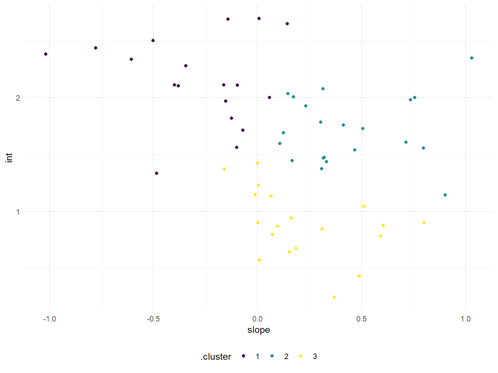

This exploratory analysis clusters opioid related data adjusted for population in each county
by the intercepts and slopes. This involved joining our population data with opioid related
interventions in hospitals. The intercepts and slopes were extracted from linear models.
This scatter plot shows the number of opioid-related deaths per 10000 people versus the number of
pills prescribed adjusted by population.

For the purposes of this model I created a region variable that measures whether a county is in
New York City or the rest of New York State. I tested two nested stepwise models to determine
which model would be best at predicting the raw number of opioid poisoning deaths. Then, variables
in the larger model were removed starting with the highest VIF until no variables had a VIF score
greater than 10.
##
## Call:
## lm(formula = opioid_poisoning_deaths ~ rural_urban + er_opioid +
## outpatient_opioid + population + region, data = join_dat)
##
## Residuals:
## Min 1Q Median 3Q Max
## -203.436 -12.149 2.666 16.297 259.917
##
## Coefficients:
## Estimate Std. Error t value Pr(>|t|)
## (Intercept) -9.690e+01 3.580e+01 -2.707 0.00749 **
## rural_urbanUrban -1.298e+01 8.685e+00 -1.494 0.13694
## er_opioid 1.167e+00 1.189e-01 9.814 < 2e-16 ***
## outpatient_opioid 1.745e+01 3.218e+00 5.423 2.01e-07 ***
## population 1.900e-04 2.292e-05 8.292 3.43e-14 ***
## regionROS 8.650e+01 3.478e+01 2.487 0.01385 *
## ---
## Signif. codes: 0 '***' 0.001 '**' 0.01 '*' 0.05 '.' 0.1 ' ' 1
##
## Residual standard error: 50.83 on 168 degrees of freedom
## Multiple R-squared: 0.9015, Adjusted R-squared: 0.8985
## F-statistic: 307.4 on 5 and 168 DF, p-value: < 2.2e-16##
## Call:
## lm(formula = opioid_poisoning_deaths ~ region + pills_bought,
## data = join_dat)
##
## Residuals:
## Min 1Q Median 3Q Max
## -269.53 -14.87 3.60 14.03 438.69
##
## Coefficients:
## Estimate Std. Error t value Pr(>|t|)
## (Intercept) 9.333e+01 3.132e+01 2.980 0.003301 **
## regionROS -1.134e+02 3.027e+01 -3.747 0.000245 ***
## pills_bought 4.918e-03 2.007e-04 24.502 < 2e-16 ***
## ---
## Signif. codes: 0 '***' 0.001 '**' 0.01 '*' 0.05 '.' 0.1 ' ' 1
##
## Residual standard error: 67.75 on 171 degrees of freedom
## Multiple R-squared: 0.8218, Adjusted R-squared: 0.8198
## F-statistic: 394.4 on 2 and 171 DF, p-value: < 2.2e-16## Analysis of Variance Table
##
## Model 1: opioid_poisoning_deaths ~ rural_urban + er_opioid + outpatient_opioid +
## population + region
## Model 2: opioid_poisoning_deaths ~ region + pills_bought
## Res.Df RSS Df Sum of Sq F Pr(>F)
## 1 168 434067
## 2 171 784877 -3 -350811 45.259 < 2.2e-16 ***
## ---
## Signif. codes: 0 '***' 0.001 '**' 0.01 '*' 0.05 '.' 0.1 ' ' 1